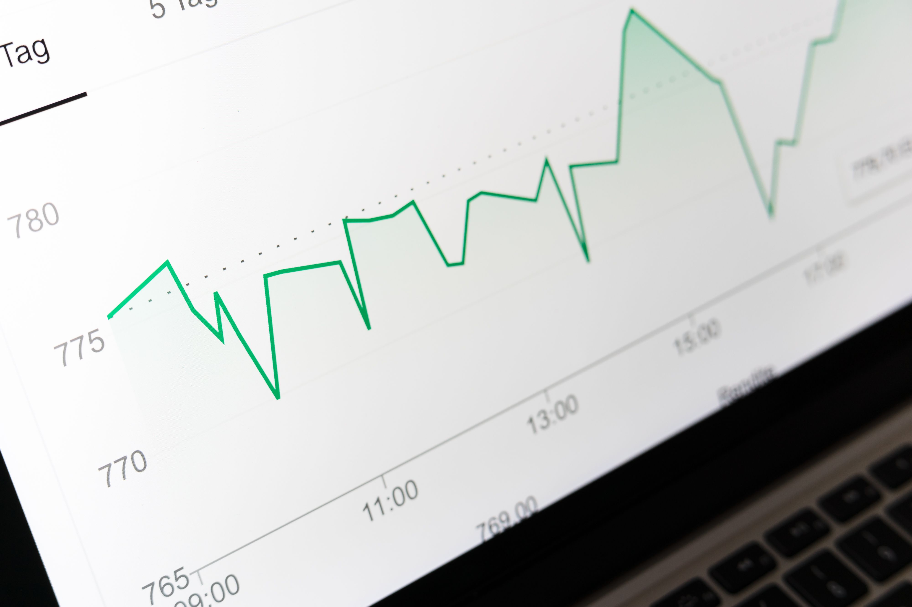

I close the gap between what technology can do and what people need.

About me
I work full time as a solutions designer in Microsoft 365 and Power Platform consulting, and I am completing the Machine Learning Analysis diploma at NorQuest College part time.
Outside and away from the computers, I enjoy baking, decorating, painting and doing some handy crafts around the home
Projects
GoAuto
Predicting monthly service revenue for dealerships, with an API, Docker and experiment tracking.
Read the case studyBVGEC financial model
An NPV model, calculator and chatbot that answer one question for a solar co-op: is the project worth building?
Read the case studyFace recognition
[One line once you share the details.]
Case study coming next
Power Apps and dashboards
These are examples of business tools I have designed and built. Client details are left out, and I can show more in conversation.
Idea submission and triage app
A Power Apps tool where people submit ideas, reviewers triage them, and colleagues like and comment.
Product health dashboard
A Power BI dashboard for leaders to track how products are doing and make decisions.
Risk analysis dashboard
A Power BI dashboard for managers to monitor risk.
Responsible AI in practice
On the BVGEC project we treated limits as part of the result:
- Data limits: our data was synthetic practice data over five years, so we say plainly what it can and cannot show.
- Explainability: the calculator and chatbot are rules-based. They run the same formulas as the model, so every answer can be traced to an input.
- Assumptions: we flagged inputs we could not confirm, such as the discount rate, and showed how much each one moves the answer.
- Privacy: no client data is published here, and I use no confidential material in AI tools.
Reflection
One lesson from BVGEC: when I changed the calculation engine, one chart still used the old baseline and drew wrong bars. I now re-run every cell and check the key numbers whenever the model changes.
Working as a team is not only about the outcome, but that in the ends, sometimes, one might be pleasantly surprise with the team
Career goals
I want to work as a data or machine learning analyst, ideally on forecasting and financial or operations models. I bring a UX/UI designer background and several years building Microsoft 365 and Power Platform solutions, so I can build the tool people actually use, such as a calculator, dashboard, Power Platform support, or app. Over the next few years I want to get stronger at deploying and monitoring models, and at explaining results to people who make decisions.
Let's talk
I'm looking for data and machine learning analyst roles, and I'm happy to walk through any project here.
My UX and design portfolio · Linkedin profile
Email me: ndukweamara.j@gmail.com